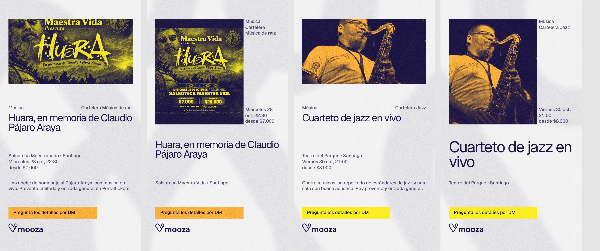
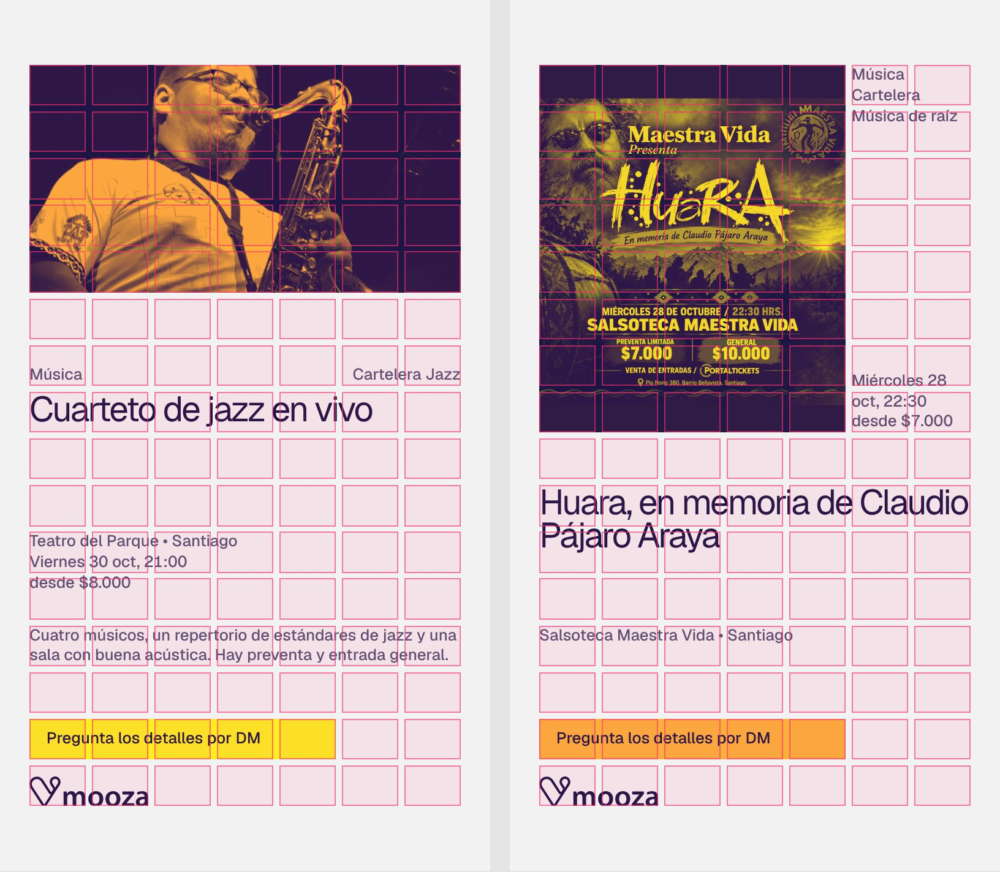
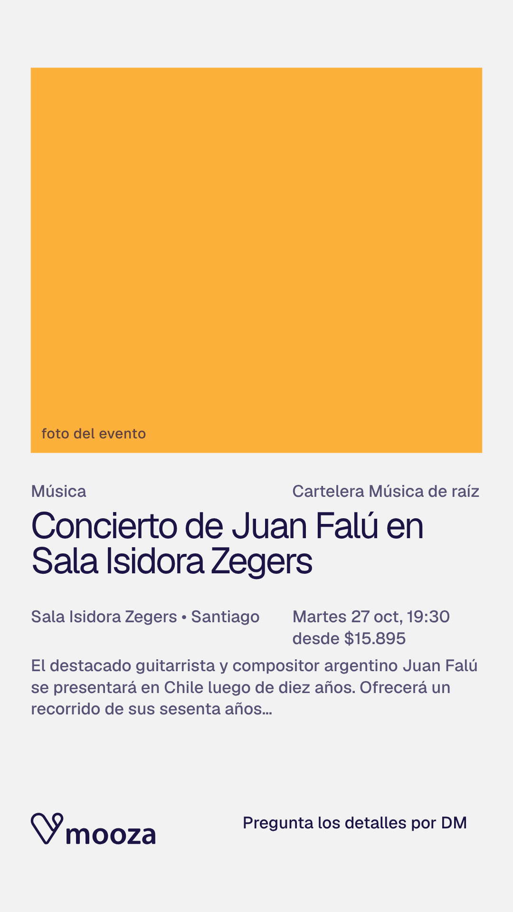

Sistema de diseño Mooza
La semana es la grilla: siete columnas, una por día. Cada pieza se arma sobre ella, con color plano, una sola familia tipográfica y, detrás de todo, el logo a una escala en que ya no se lee como logo. Este es el único sistema vigente.
Siete columnas, margen y medianil ajustables
Margen y medianil son un porcentaje del ancho, así que escalan con cualquier formato. Los titulares y los números se miden en columnas: si cambias el margen o el medianil, el texto se reajusta y la composición se mantiene. Prueba los controles.
Ver los elementos- Columnas
- Siete, siempre. Las filas cambian con el formato: 9 en 4:5 y 16 en 9:16.
- Margen
- Del 3 al 12 % del ancho. Estándar 6 %. Más margen da más aire, menos margen da más densidad.
- Medianil
- De 0,6 a 3,5 %, y como máximo la mitad del margen.
- Pie
- La última fila de todo cartel. El logo, de dos columnas, a la izquierda; la fecha, a la derecha. Nada más entra ahí.
- Imagen
- Ocupa celdas completas y nunca llega al borde. En los ejemplos es un cuadrado azul.
La misma grilla en cada formato
Siempre son siete columnas. Lo que cambia es el número de filas, que se elige para que la celda quede casi cuadrada: alto de celda = (alto − 2 × margen − (filas − 1) × medianil) ÷ filas. Medidas con margen 6 % y medianil 1,2 %.
| Formato | Tamaño | Filas | Alto de celda | Diseños | Uso |
|---|---|---|---|---|---|
| 4:5 | 1080 × 1350 px | 9 | 11,5 % | titular, número, foto, semana, agenda | Feed de Instagram y carrusel |
| A3 vertical | 297 × 420 mm | 11 | 10,7 % | titular, número, foto, semana, agenda | Afiche impreso y exterior |
| 1:1 | 1080 × 1080 px | 8 | 9,9 % | titular, número, foto, semana | Posts cuadrados |
| 9:16 | 1080 × 1920 px | 16 | 8,3 % | story, story-vertical | Stories y portada de reel |
| 16:9 | 1920 × 1080 px | 4 | 10,2 % | titular, número, foto | Slides, pantallas y banner web |
El logo no se redibuja
Los archivos están en kit/logo/: horizontal, vertical e ícono en azul, blanco, amarillo y naranjo, en SVG, PNG sin fondo y PDF. El logo va siempre plano, en un solo color.
En los carteles el logo vive en el pie: la última fila, a la izquierda, con el ancho exacto de dos columnas.
Espacio libreMedia altura del logo por los cuatro lados.
Por debajo de 96 px se usa solo el ícono, nunca el logo reducido.
No deformarlo ni girarlo. No recolorearlo con colores fuera de la paleta. No ponerlo sobre una foto. No agregarle sombras, bordes ni efectos.
Cinco colores planos y un neutro
Orden de importancia: gris claro (el "blanco" de la marca, fondo de todo), azul (protagonista, pero no absoluto) y amarillo y naranjo. Cada pieza tiene una sola zona de color: en un conjunto, cerca de la mitad es azul y el resto se reparte entre amarillo y naranjo. Los colores nunca compiten. No hay degradados ni sombras.
#1b1444Color principal: zona de color, tinta de textos y de fotos.#fcee21Zona de color o acento.#fbb03bZona de color o acento alternativo.#ffffffTexto y logo sobre azul.#f2f2f2El "blanco" de la marca: fondo de todo.Cuatro tonos derivados, solo para las formas del fondo de marca, mezclas de la propia paleta:
--mz-tono-azul--mz-tono-amarillo--mz-tono-naranja--mz-tono-claro14,1 : 1Azul sobre amarillo. AA
9,2 : 1Azul sobre naranja. AA
15,2 : 1Azul sobre gris claro. AA
17,1 : 1Azul sobre blanco. AA
14,1 : 1Amarillo sobre azul. AA
17,1 : 1Blanco sobre azul. AA
1,8 : 1Blanco sobre naranja. No usar como texto
1,5 : 1Naranja sobre amarillo. No usar
Una sola familia, la jerarquía en el tamaño
Geist para todo. Peso 400 en titulares, nombres y textos; peso 500 en números, fechas, horas, precios y etiquetas. Licencia abierta (OFL) en Google Fonts. Lo que ordena la lectura es el tamaño, no el peso.
- TitularGeist 4001,4 columnas de alto de letra • interlínea 0,92 • tracking −0,05 em • mayúscula inicial
- Cuarteto de jazz en vivoGeist 400Nombre de evento, sala o artista • 0,95 columnas • mayúscula inicial
- 26–1 • 21:00 • $6.000Geist 500Números y datos • 2,2 columnas el número • cifras tabulares • tracking −0,04 em
- Música • Teatro • CineGeist 500Etiquetas de categoría • 0,2 columnas • mayúscula inicial
- Texto de cuerpo y de interfazGeist 40016 px, interlínea 1,5 • ancho de línea máximo de 65 caracteres
Ángulos rectos y sin sombras
En el tema claro el botón principal es azul con texto blanco y se vuelve amarillo al pasar el cursor. Los filtros activos y el destacado llevan el amarillo como acento. En el tema oscuro el botón principal es amarillo con texto azul.
Foto vertical y pestaña
Las fotos de los eventos suelen ser flyers verticales, y en una celda apaisada se cortan mucho. story sirve para fotos apaisadas y story-vertical, para las verticales: la foto ocupa todo el ancho y once filas, casi un 4:5, y casi no se recorta. La pestaña es una etiqueta de una línea, del alto del logo, en la misma fila y apoyada en el margen derecho. Lleva el color de la foto.

Una línea, del alto del logo, ajustada al texto, con color plano y texto azul. No tiene fila propia: comparte la del logo. Va en las historias y en el afiche A3 de foto.
Todo cuelga de la columna 1 y la columna 5: categoría, título y lugar a la izquierda; cartelera, fecha y precio desde la columna 5. La descripción, de hasta tres líneas, solo va con foto apaisada.

El logo como fondo
El logo a una escala tan grande que ya no se lee como logo es la manera de comunicar de Mooza. Va siempre, detrás del texto, en todas las piezas. Se usan solo las partes curvas, las dos "o" y el ícono; cada zona lleva la forma en un tono apenas distinto de su color, con el borde suave y un grano fino encima.


Va por defecto en el generador: fondo: 'tono', difuminado: 1.8 y grano: true. La semilla cambia la composición. fondo: false lo quita.
Las plantillas SVG del kit no lo llevan, porque el grano y el borde suave no viajan dentro de un SVG editable.
Es la única excepción a la regla de "sin degradados ni sombras".
Fotos en tinta azul con transparencia
La foto se convierte a un PNG de un solo color, el azul, con las sombras opacas y las luces transparentes. Se apoya sobre una zona lisa amarilla o naranja, que asoma por las luces. Va en la celda de foto o a sangre en la zona de color, y sobre una foto oscura el titular puede ir en blanco.
Probar con tus fotos
Procedimiento (el del PSD de ejemplo): una capa de relleno sólido azul cuya máscara es el canal verde de la foto, invertido. El alfa es 255 menos el canal verde, así que las sombras quedan opacas y las luces transparentes. Se hace con la herramienta kit/tinta/index.html en el navegador, con kit/tinta/tinta.py por lotes o con components/tinta/ en una web.
Las cuatro musas
Mooza suena a musa. Euterpe (música), Talía (teatro), Terpsícore (danza) y Calíope (letras): grabado de línea fina en tinta azul con transparencia, flotando, sin escena ni marco. Van sobre una zona de color o sobre el corte entre dos colores, con el color pasando por la figura; nunca sobre una foto.


Una musa por pieza. Con el logo y mooza.cl en el pie, es el diseño musa del generador, en formato carta.
Los dibujos, sus versiones en tinta azul y los prompts con que se hicieron están en kit/ilustraciones/.
Poleras
Estampa en serigrafía de dos tintas sobre polera gris claro: un círculo naranjo o amarillo, alternados entre musas, y las líneas azules encima. El círculo va en el centro de los cuatro bloques (titular, categoría, nombre y logo), y la musa queda centrada entre el titular y el logo. Titular en Geist 400 y mucho blanco.


Las maquetas son simuladas, no fotografías. Las capas de impresión (una por tinta) están en kit/poleras/.
Tú, directo y sin exclamaciones
- TitularEsta semana pasan cosasDirecto, con mayúscula inicial y sin punto de exclamación. Sin eslóganes.
- Fecha26 oct – 1 novMes abreviado en minúscula y raya corta con espacios. Rango corto en grande: 26–1.
- Lugar y horaTeatro del Parque • 21:00Punto medio entre lugar y hora. Hora en 24 horas.
- Precio$6.000 • desde $5.000 • GratisPunto de miles, sin decimales. “Gratis” con mayúscula inicial, nunca “free” ni “GRATIS”.
- TratamientoMira, ven, guarda tu planTuteo. Sin voseo, sin emoji.
- CierreToda la agenda en mooza.clSe conserva la frase actual.
Lo que hay en la carpeta kit
- PlantillasLas 19 plantillas, con fondo de marca y sin él, en SVG editable, PNG y PDF. Todas juntas en un solo SVG: mooza-carteles.svg (vista previa).
kit/Cada plantilla por separado
agenda-a3.svg · agenda.svg · foto-16x9.svg · foto-1x1.svg · foto-a3.svg · foto.svg · numero-16x9.svg · numero-1x1.svg · numero-a3.svg · numero.svg · semana-1x1.svg · semana-a3.svg · semana.svg · story.svg · titular-16x9.svg · titular-1x1.svg · titular-a3.svg · titular.svg
- GrillasLas cinco grillas vacías en SVG: 4:5, A3, 1:1, 9:16 y 16:9.
kit/grillas/ - CeldasCuadrados rellenos y de contorno en los colores de la paleta, para armar composiciones a mano.
kit/celdas/ - LogoHorizontal, vertical e ícono en azul, blanco, amarillo y naranjo, en SVG, PNG sin fondo y PDF, y sobre cada fondo.
kit/logo/ - FondosEl fondo de marca solo, en cada color y formato: SVG con las formas, y PNG y PDF con grano y borde suave.
kit/fondos/ - FotosMarcador de posición y reglas de recorte para las fotos de eventos.
kit/fotos/ - TintaHerramienta en el navegador y script por lotes para convertir fotos a tinta azul con transparencia.
kit/tinta/ - IlustracionesLas cuatro musas, sus versiones en tinta azul y los prompts con que se hicieron.
kit/ilustraciones/ - PolerasCapas de impresión y maquetas.
kit/poleras/ - GeneradorRegenera las plantillas del kit.
kit/build-kit.mjs


